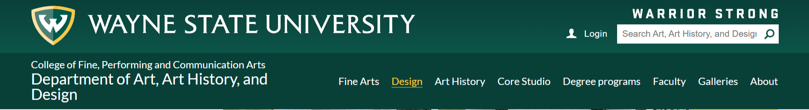
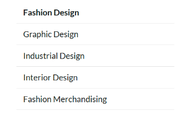
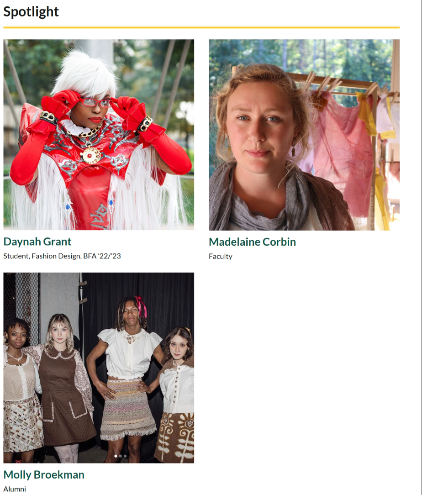
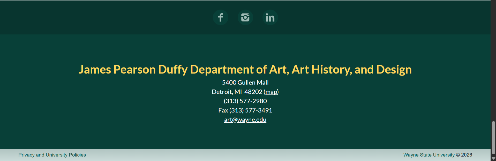
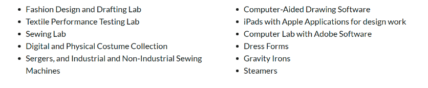

College of Fine, Performing and Communication Arts-Fashion Design
My criteria for choosing which page I would review was simple, it needed to at least minimally fit the listed criteria and for it to be a program I did not know much about. This page fits both of those wonderfully, it hits all the listed criteria multiple times over and was a program I did not even know we offered. There is only one section that Is a little strange but that will be covered in Link Analysis.
Major Sections
Site Header

This should be marked with the header element. This is the topmost section of the page. The site dev agrees also marking it header.
Sidebar Navigator

This should be marked with the nav element. Its primary function is to navigate you across the greater webpage. The site dev agrees also marking it nav.
Primary Content



I would have used sections on each of these sections (separated by screenshot) separately. My thought being that while they are all a part of the main, they are each contributing different things to those larger sections and thus should be separated. The site devs instead use div ids and classes to separate these up under the larger main section.
Footer

Headings
- Fashion Design- H1, this is the first header of the main content.
- The Fashion Design used for the nav section mentioned previously looks like a small heading but is just bold, most likely to represent that being the active page
- Career opportunities, Facilitites (incorrectly spelled), Resources, Organizations Student work gallery, Spotlight, Contact, James Pearson Duffy Department of Art, Art History, and Design- H2, these are all subsections of the main content (or apart of the footer) thus taking a step down in size
- Molly Broekman, Madelaine Corbin, Daynah Grant-H3, these are all subsections of Spotlight (mentioned above) that contain their own subtext and links.
Lists

- This should be an unordered list, and it consists of links
- This should be an unordered list, and it consists of plain text
Link Analysis
Technically speaking there are no fully external links on this page that are currently functional, or at least functional for me. The link is supposed to open with the “Dorothea June Grossbart Historic Costume Collection” text sends me to a forbidden webpage error that is intact not an internal site. However, when I look in the source code it shows an internal link to the library. Every other link on this page is an internal link; some are just absolute while others are relative
Absolute links (the text that appears on the webpage)- Fashion Design and Merchandising Organization, Molly Broekman, Madelaine Corbin, Daynah Grant, Facebook, Instagram, LinkedIn, Map, Privacy and University Policies, Wayne State Univeristy
Relative Links (the text that appears on the webpage)- Fashion Design, Graphic Design, Industrial Design, Interior Design, Fashion Merchandising, Fine Arts, Design, Art History, Core Studio, Degree Programs, Faculty, Galleries, About
Table
There were no tables :C
Accessibility Review

Zero errors, two alerts (redundant link and noscript element). All images have alt text. Fixing the link (mentioned previously) would be my only accessibility change that needs addressing.
Validation

One error and six infos. The error is about the aria hidden attribute being use in the noscript element. This is an issue and they should never be used together because at best its redundant and at worst it causes accessibility issues. All of the infos are about trailing slashes.
Summary
Generally speaking, I think the webpage was fairly well structured with only minor changes that it really should make. Most other notes are things I would have done instead but that doesn’t mean the way it was done was wrong. The things that need to be done would be the broken link, the HTML error and the spelling mistake. A change I would make would be to alter the section structure of the main content.